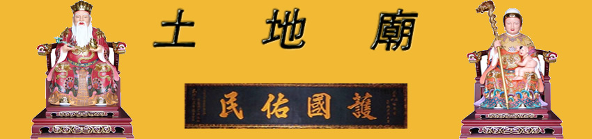
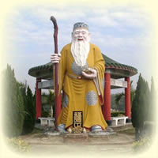

|  |
|
土地公為土地的守護神，正式名稱是「福德正神」，民間俗稱有后土、社神、社公、伯公、土地或福神等，於市街、寺廟皆以「福德正神」尊稱. 我國自古以農立國，一般百姓都非常重視土地，認為有土地才能栽種五穀，有了五穀才能生存，因此對土地常懷感謝之念，自然就產生一種崇拜的心理，於是創 造出土地神來，把土地當做神明來敬奉了。祭土地是上至王公貴族，下至小民百姓一年中的大事。先秦時期社神地位極高，故“社稷”一詞通常作爲國 家的代稱，祭祀典禮也由天子或各地行政長官主持。最初相傳的社神有兩個：一是句 龍，《禮記·祭法》記載：“共工氏之霸九州也，其子曰後土，能千九州，故祀以爲社”。周朝時以二十五家為一社，而封王立社未有土也，封王立社後供奉的神明就是土地公，每社要立社壇一所，供奉土地神， 以祈五穀豐收。據傳后土是執掌九大州土地的總司神，而土地公則是歸於后土屬下的一個地方土神，凡是生前有德，死後皆可成為土地神。所以土地神又稱 "福德正神"。 明清以後民間又多以名人作爲各方土地。例如：清代翰林院及吏部所祀之土地，傳爲唐代大文人韓 愈。杭州太學一帶，原是嶽飛的故鄉，於是太學就奉嶽飛爲土地神。 南宋之前土地廟裏只供奉著土地公公，而南宋之後，土地廟中則配有土地婆。這個習俗沿用至今，現許多農村土地廟裏都供奉著土地公和土地婆。而土地公和 土地婆都是慈眉善目，白須白髮的老人。但有些地方的廟宇卻只有土地公而已？這跟民間傳說的一個故事有關。傳說玉皇大帝委派土地公下凡時，問他有什麽願望與 抱負。土地公回答希望世上的人個個都變得有錢，人人過得快樂。土地婆卻堅決反對，她認爲世間的人應該有富有貧，才能分工合作發揮社會功能。土地公說：“那 麽，貧窮的人不是太可憐了嗎？”土地婆反駁道：“如果大家都變成有錢人，以後我們女兒出嫁，誰來幫忙擡轎子呢？”一句話說得土地公啞口無言，並打消了這個 原可讓世人“皆大歡喜”的念頭。也正是因爲土地婆的反對，人世間才有今天的貧富差別。所以有的地方的人們覺得土地婆自私自利，是一個“惡婆”，因而不肯供 奉她，但卻對土地公推崇備至。但也有人認爲土地婆的觀點符合人類發展，所以中國南方土地廟常有對聯稱：“公做事公平，婆苦口婆心”。 古時天地之神，均由歷代帝王或地方官員奉旨祭祀，稱之為春、秋二祭，民間百姓不得祭祀，古代的人對於土地常懷感謝之念，為祭祀土地公，因此發展出一種 祭祀土地公的方式來區別於官方的春、秋二祭，以免冒犯天威。我國是個農業國家，農事與季節有很大的關係，古人在播種的時後，就會祭祀「土地公」祈求豐收， 而在收成的時候也祭祀「土地公」，報告豐收，以謝「土地公」，前者叫「春祈」、後者稱做「秋報」。 古人於「秋報」時向「土地公」祈求賜福賜福降祿，八月十五日，恰是五穀收成的時候，這一天，民間百姓都會祭祀「土地公」報告豐收，現今之「中秋節」可能就是「秋報」的遺俗，經過後人益事精華，而漸漸盛大起來。 土地神崇奉之盛要歸功於明太祖的推動，據《琅玡漫抄》記載，太祖朱元璋出生之地就在一座小土地公廟裡，因此明朝土地廟數目特別多，以後各地相沿成習， 土地廟就無所不在，由土地公造型可看出土地職司的神務類別，一般常見的多是銀髮白鬚的老者，造型如果手拄拐杖者就具守護的任務，手握元寶或如意者，就是土 地財神。如有轄區內有人高中狀元進士（現今鄉長、縣長）土地公的神格也會水漲船高，頭上可加戴一頂官帽。 關於土地公與土地婆的神職，有多種說法。古籍堪輿書記載：自東晉以後，隨著封建國家從中央到基層的官僚制度的逐漸完善，土地神也演變成爲在 道教神階中也逐漸等級化，退變細化爲管理本鄉本土的最低級的小神.《搜神記》卷五稱廣陵人蔣子文因追賊而死。後蔣子文死後化身爲土地神，並顯 靈於道說：“我當爲此土地神，以福爾下民”。這裏所指的“福爾下民”，就是指保佑本鄉本土家宅平安，添丁進口，六畜興旺，並且爲百姓主持公道。古時人們把 延續香火當成家族中的一件大事，因而人們對土地公與土地婆推崇備至，經常到土地廟祭拜，祈求土地公與土地婆送子送福。如果一家人在過去的一年有添丁的，那 麽就要在第二年春節期間擡著土地公與土地婆的神像遊村，一方面表達添丁之喜，二來答謝土地公與土地婆對自己家的恩賜。此外，在民間，除了遊神外，在元宵那 天還會擺點燈酒。因“丁”的諧音，“點燈”有“添丁”之意，故擺點燈酒來慶賀。 但也有另外一種說法認爲土地公與土地婆是掌管地府行政 的，除了保護鄉里安寧平靜，同時隸屬於城隍之下，掌管鄉里死者的戶籍。在漢族許多地區有一個這樣的習俗，每個人出生都有“廟王土地”——即所屬的土地廟， 類似於每個人的籍貫。一個人去世之後，道士做超度儀式時，都會去其所屬土地廟作祭祀活動。或者是新死之人的家屬，到土地神廟，稟告死者姓名生辰等資料，以 求土地神爲死者引路。如潮汕地區有一種稱爲“報地頭”的習俗。若是家中有人去世，必須到土地廟報喪。由村中長者持白燈籠，帶領死者男性子孫穿孝服到地頭神 廟報死。到廟，長者上香後取出年庚帖，對著神像報告說：“生從地頭來，死從地頭去，時辰念給老爺知。”通過這種方式讓死者到土地神那裏報到，並由土地神引 領其踏上輪回的道路。 民間對土地公的傳說很多，其一是：福德正神姓張名福德，生於周武王二年二月二日，自小聰穎至孝；三十六歲時，官朝廷總稅官，為官廉正，體恤百姓之疾 苦，做了許多善舉。至周穆王三年辭世，享年一零二歲。死後三日容貌不變，有一貧戶以四大石圍成石屋奉祀，過了不久，即 由貧轉富，百姓咸信神恩保佑，乃合資建廟並塑金身膜拜，故生意人常祀之。亦有說在他死後，接任的稅官上下交征，無所不欲，民不堪命。這時，人民想到張福德為政的好處，念念不忘，於是建廟祭祀，取其名而尊為「福德正神」。 農曆二月初二是福德正神誕辰。  |
| 電子郵件:miduoyuan@miduoyuan.com |